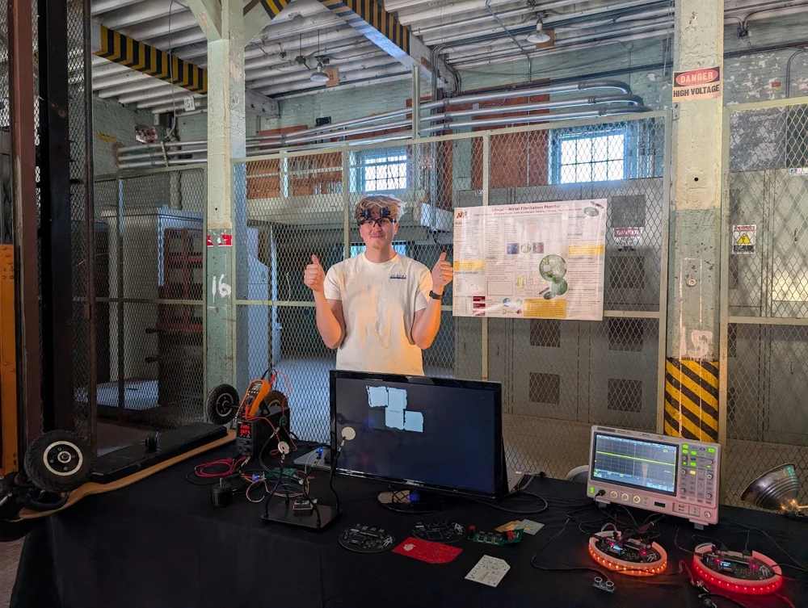

2026
Mare Island Naval Shipyard
Vallejo, California
Sync Tank
The 2026 exhibit brings aquariums, cameras, robotics, and local-first software together to observe and interact with aquatic environments.
VOLUNTEERING / SYNC TANK PRESENTATIONS
Mare Island / Vallejo, California
My volunteering and presentations at Maker Faire have mainly focused on Sync Tank. I use the system to demonstrate interactive robotics, camera networking, and real-time embedded processing.
The aquarium gives visitors a physical setting for seeing how cameras, connected hardware, and live software work together.
Presenting the robotics research alongside the cardiac monitor and other university hardware projects.

2024 / 2025 / 2026 SO FAR
Mare Island Naval Shipyard
Vallejo, California
The 2026 exhibit brings aquariums, cameras, robotics, and local-first software together to observe and interact with aquatic environments.
Mare Island Naval Shipyard
Vallejo, California
The 2025 exhibit introduced Sync Tank through a robotic arm and camera-based observation, connecting aquarium care with embedded hardware and software.
Mare Island Naval Shipyard
Vallejo, California
I presented my thesis work on robotic mechanical search alongside other projects, including the wearable cardiac monitor and biology teaching hardware.
OBJECTIVES
PRESENTATION / SYNC TANK
Present the physical system and show how interaction connects to robotic hardware.
Show live camera views and explain how the cameras connect to the observation interface.
Explain the firmware and processing that connect sensing, communication, and hardware response.
SYNC TANK / PROJECT IMAGES
Build and demonstration images of Sync Tank.